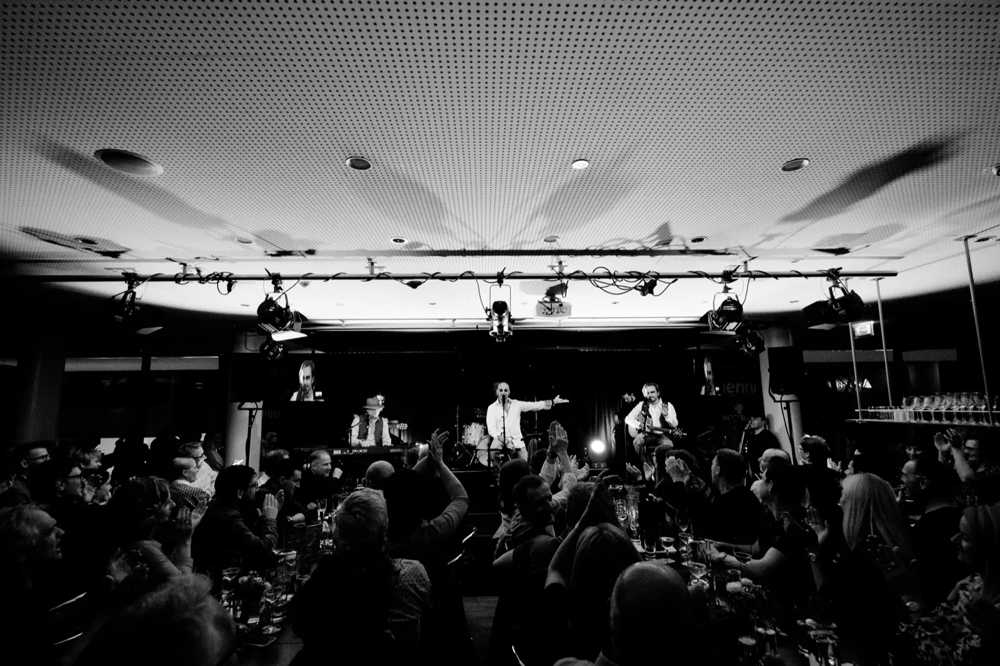
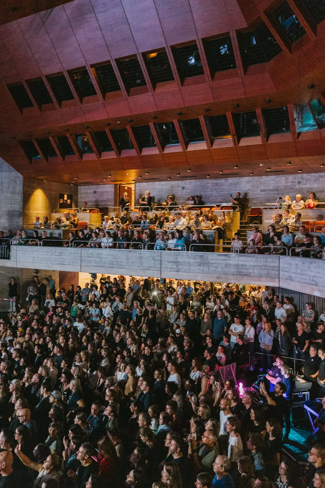

Seminare
Tagung mit Verpflegung, Pausen und Raum für Gespräche – konzentriert und gut versorgt.

Anfrage starten
Hochzeiten · Feste · Catering
In der Wirtschaft feiern, eine Veranstaltung im Kulturhaus Dornbirn kulinarisch begleiten oder Catering an einen Wunschort bringen lassen.
Persönlich geplant · passend zum Anlass · ohne Standardpaket-Zwang
Anfragen stellen
Bis 120 Gäste feiert ihr in der Wirtschaft – die Anfrage stellt ihr direkt hier. Ab 120 bis 600 Gästen gehört die Bühne dem Kulturhaus: Den Raum fragt ihr dort vor Ort an, das Catering läuft in jedem Fall über Wolfgang Preuß und die Wirtschaft.
Business
Tagung mit Verpflegung, Pausen und Raum für Gespräche – konzentriert und gut versorgt.
Großes Format mit Bühne, Technik und Catering – vom Empfang bis zum Abendprogramm.
Jubiläum, Sommerfest oder Empfang – das Team feiert, wir kümmern uns um den Rest.
Der Jahresabschluss mit Essen, Musik und Stimmung – rechtzeitig anfragen lohnt sich.
Privat
Vom Empfang bis zum gemeinsamen Abend: Essen, Getränke und Ablauf als stimmiges Ganzes – bei uns in der Wirtschaft.
Geburtstag, Taufe, Jubiläum oder Familienfest – persönlich, festlich oder ganz unkompliziert, bei uns im Haus.
Wo soll gefeiert werden?

Restaurantatmosphäre, Küche und Gastgeberteam an einem Ort. Konzertabende, Feste und Feiern mitten im Haus.

Der große Saal für Kongress, Firmenfeier und Konzert. Raum über das Kulturhaus, Catering über die Wirtschaft.

Firma, Garten, Vereinslokal oder besonderer Platz: Mit dem Foodtruck kommen Küche und Bühne zu euch.
Gut zu wissen: Verfügbarkeit, mögliche Gästezahl, Ausstattung und Leistungsumfang werden für jeden Termin individuell bestätigt.
Einfach anfangen
Anlass, Ort, Datum und ungefähre Gästezahl reichen.
Wünsche, Rahmen und offene Fragen gemeinsam klären.
Kulinarik, Getränke, Ablauf und mögliche Zusatzleistungen abstimmen.
Erst nach einem konkreten Angebot und eurer Freigabe wird gebucht.
Unverbindliche Anfrage
Es müssen noch nicht alle Details feststehen. Pflichtfelder sind nur die Angaben, die einen sinnvollen ersten Kontakt ermöglichen.